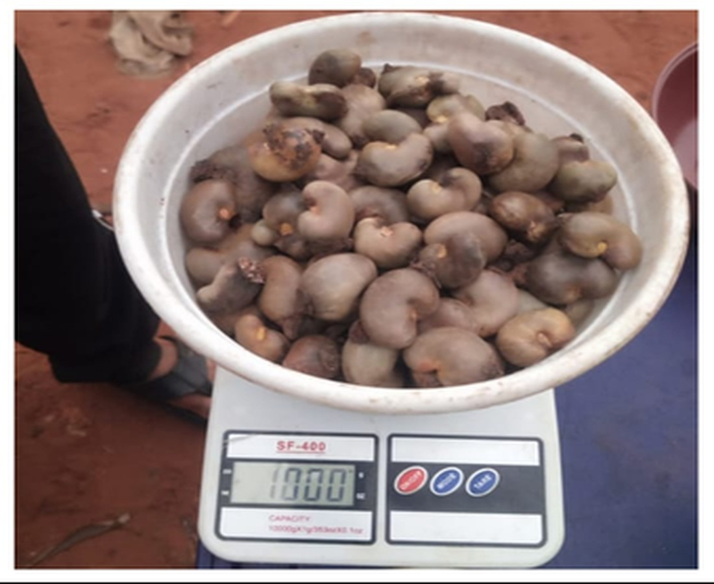
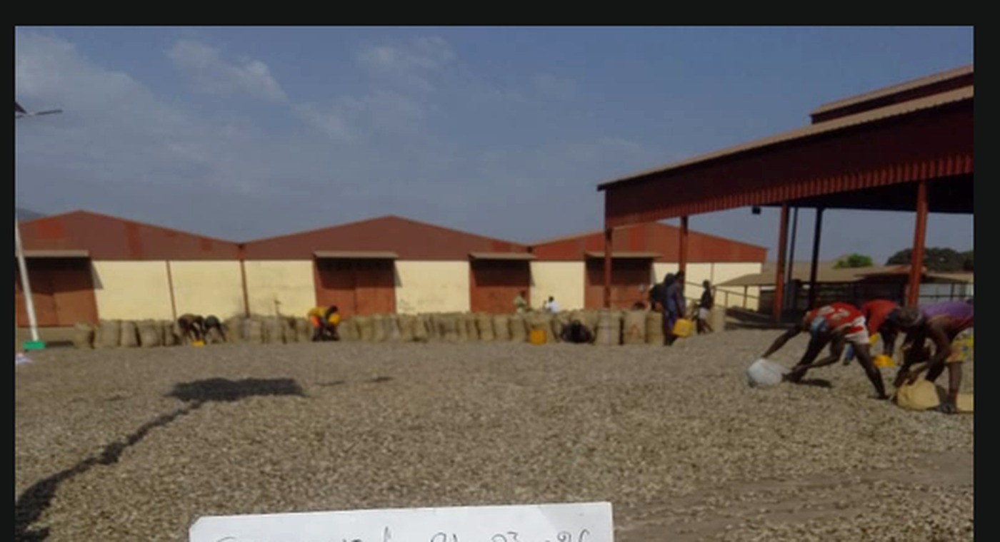

CTIA GUINÉE TRADING
SOCIÉTÉ MULTISECTORIELLE · CONAKRY
Anacarde / Akazu
FR
EN
WhatsApp
☰
05 · ANACARDE / AKAZU


ORIGINE
Guinée · Kankan / Boké
KOR
46–50 lbs / sac 80 kg
Max. 8–10 %
CALIBRE
Nut count
180–200 / kg
Max. 0.5 %
Max. 1.5 %
Jute · 80 kg
WhatsApp
WhatsApp
×